POSTERIOR AGREEMENT FOR 1D CONNECTIVITY
Author: Nico Stephan Gorbach , Institute of Machine Learning, ETHZ, email: nico.gorbach@inf.ethz.ch
Implementation of " Pipeline Validation for Connectivity-based Cortex Parcellation " by Nico S. Gorbach, Marc Tittgemeyer and Joachim M. Buhmann
Contents
- Introduction
- Input
- Generate noisy trajectories
- Connectivity matrices
- Deterministic annealing
- Perturb centroids
- Expectation maximization
- Costs for histogram clustering given instance 1
- Costs for histogram clustering given instance 2
- Gibbs distribution 1
- Gibbs distribution 2
- Joint Gibbs distribution
- Centroids for instance 1
- Centroids for instance 2
- Match clusters across data instances
- Log partition sum for instance 1
- Log partition sum for instance 2
- Joint log partition sum
- Generalization capacity
- Number of equivariant transformations
- Results
- Discussion
clear all; close all; clc
Introduction
This code documentation demonstrates that seed clusters become indistinguishable with increasing noise in the target connectivity scores. Ornstein-Uhlenbeck (OU) processes with different initial conditions were used to emulate fiber tracking between seed and target objects.Seed objects are grouped based upon their connectivity scores to target objects which were obtained by sampling from the OU-process 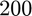 times. The means of the OU processes were selected such that, at low and medium SDE diffusion coefficients, three clusters of seed objects can be statistically distinguished from each other based soley on the connectivity scores of the seed objects. Contrastingly, at a high SDE diffusion coefficient the overlap in connectivity scores attributed to different seed objects become so great such that only two (and not three) clusters of seed objects can be statistically distinguished from each other.
Input
Set the number of potential clusters, the number of Ornstein-Uhlenbeck samples per seed coordinate and the diffusion term.
K = 3; % number of potential clusters ntrials = 1000; % number of Ornstein-Uhlenbeck trials diffusion = [0.1,3,10]; % diffusion in Ornstein-Uhlenbeck process final_time = 10; % final time in Ornstein-Uhlenbeck process seed_coords = 1:60; % seed coordinates target_coord = [10,12,20,50]; % target coordinates
for n = 1:length(diffusion)
Generate noisy trajectories
Connectivity matrix is generated by sampling from the Ornstein-Uhlenbeck process
target_coord_assign(:,1) = [ones(20,1);3*ones(20,1),;4*ones(20,1)];
target_coord_assign(:,2) = [2*ones(40,1);4*ones(20,1)];
[~,~,true_cluster_labels(:,n)] = unique(target_coord_assign,'rows');
nSamples = 10;
edges = 1:1:80;
for l = 1:ntrials
for i = 1:length(seed_coords)
for k = 1:size(target_coord_assign,2)
[truth(l).trajectory(i,:,k),time] = OU_process(seed_coords(i),target_coord(target_coord_assign(i,k)),final_time,diffusion(n));
end
end
end
% packing
trajectory_all{n} = [reshape(target_coord_assign,[],1),[truth(1).trajectory(:,:,1);truth(1).trajectory(:,:,2)]];
Connectivity matrices
for m = 1:2 connectivity_matrix{n}{m} = []; for i = 1:length(seed_coords) clear trajectory; for j = 1:nSamples k =randi(2); [trajectory(j,:),time] = OU_process(seed_coords(i),target_coord(target_coord_assign(i,k)),final_time,diffusion(n)); end connectivity_matrix{n}{m}(i,:) = histcounts(trajectory(:,end),edges); end end % remove columns of zeros rem_idx(n,:) = sum(connectivity_matrix{n}{1},1) + sum(connectivity_matrix{n}{2},1) == 0; connectivity_matrix{n}{1}(:,rem_idx(n,:)) = []; connectivity_matrix{n}{2}(:,rem_idx(n,:)) = [];
% normalize connectivity matrix
data1 = connectivity_matrix{n}{1};
data2 = connectivity_matrix{n}{2};
% start timer
tic;
Deterministic annealing
Determine global minimizer.
% Annealing settings beta_init = 0.1; % starting inverse temperature beta_step = 1.02; % inverse temperature step beta_stop = 5; % stopping inverse temperature perturb_sd = 0.01; % centroid perturbation % Initialization of Gibbs distributions gibbs_dist1 = ones(size(data1,1),K) ./ K; gibbs_dist2 = ones(size(data2,1),K) ./ K; % Initialization of centroids centroid1 = gibbs_dist1'*data1; centroid1 = bsxfun(@rdivide,centroid1,sum(centroid1,2)); centroid1(centroid1==0) = eps; centroid2 = gibbs_dist2'*data2; centroid2 = bsxfun(@rdivide,centroid2,sum(centroid2,2)); centroid2(centroid2==0) = eps; j = 0; beta = beta_init; while beta < beta_stop
Perturb centroids
Avoid local minimum by perturbing centroids: 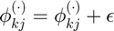
%r = perturb_sd * rand(size(centroid1)); centroid1 = centroid1 + perturb_sd * rand(size(centroid1)); centroid1 = bsxfun(@rdivide,centroid1,sum(centroid1,2)); % normalize centroid2 = centroid2 + perturb_sd * rand(size(centroid1)); centroid2 = bsxfun(@rdivide,centroid2,sum(centroid2,2)); % normalize
Expectation maximization
Iterate between determining Gibbs distributions and maximzing variational lower bound w.r.t. centroids.
for iter = 1:80
Costs for histogram clustering given instance 1
KL divergence between empirical probabilities (data) and centroid probabilities (up to proportionality constant): 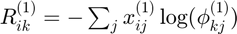
potential1 = -data1 * log(centroid1)';
Costs for histogram clustering given instance 2
KL divergence between empirical probabilities (data) and centroid probabilities (up to proportionality constant):
potential2 = -data2 * log(centroid2)';
Gibbs distribution 1
Maximum entropy distribution: 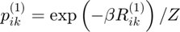
gibbs_dist1 = exp(-beta * potential1);
partition_sum1 = sum(gibbs_dist1,2);
gibbs_dist1 = bsxfun(@rdivide,gibbs_dist1,partition_sum1);
% avoid underflow
idx = find(partition_sum1==0);
if ~isempty(idx)
[~,min_cost_idx] = min(potential1(idx,:),[],2);
max_ind = sub2ind(size(gibbs_dist1),idx,min_cost_idx);
gibbs_dist1(idx,:) = zeros(length(idx),K);
gibbs_dist1(max_ind) = 1;
end
Gibbs distribution 2
Maximum entropy distribution: 
gibbs_dist2 = exp(-beta * potential2);
partition_sum2 = sum(gibbs_dist2,2);
gibbs_dist2 = bsxfun(@rdivide,gibbs_dist2,partition_sum2);
% avoid underflow
idx = find(partition_sum2==0);
if ~isempty(idx)
[~,min_cost_idx] = min(potential2(idx,:),[],2);
max_ind = sub2ind(size(gibbs_dist2),idx,min_cost_idx);
gibbs_dist2(idx,:) = zeros(length(idx),K);
gibbs_dist2(max_ind) = 1;
end
Joint Gibbs distribution
Maximum entropy distribution: 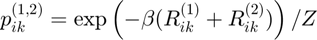
dist_joint = exp(-beta * (potential1 + potential2));
joint_partition_sum = sum(dist_joint,2);
Centroids for instance 1
Probability prototype: 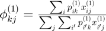
centroid1 = gibbs_dist1'*data1;
centroid1 = bsxfun(@rdivide,centroid1,sum(centroid1,2));
centroid1(centroid1==0) = eps;
Centroids for instance 2
Probability prototype: 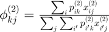
centroid2 = gibbs_dist2'*data2;
centroid2 = bsxfun(@rdivide,centroid2,sum(centroid2,2));
centroid2(centroid2==0) = eps;
end
beta = beta * beta_step; % increase inverse temperature (complexity)
Match clusters across data instances
Use Hungarian algorithm to match clusters.
%if beta < 10 match_clusters_idx = munkres(pdist2(centroid1,centroid2)); potential2=potential2(:,match_clusters_idx); %end
Log partition sum for instance 1
Determine log partition sum while avoiding underflow: 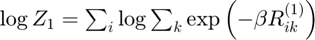
scaled_cost1 = -beta * potential1;
% log-sum-exp trick to prevent underflow
max_scaled_cost1 = max(scaled_cost1,[],2);
log_partition_sum1 = max_scaled_cost1 + log(sum(exp(scaled_cost1-max_scaled_cost1),2));
Log partition sum for instance 2
Determine log partition sum while avoiding underflow: 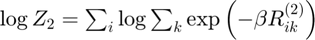
scaled_cost2 = -beta * potential2;
% log-sum-exp trick to prevent underflow
max_scaled_cost2 = max(scaled_cost2,[],2);
log_partition_sum2 = max_scaled_cost2 + log(sum(exp(scaled_cost2-max_scaled_cost2),2));
Joint log partition sum
Determine joint log partition sum while avoiding underflow: 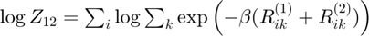
joint_scaled_cost = -beta * (potential1 + potential2);
% log-sum-exp trick to prevent underflow
max_scaled_cost3 = max(joint_scaled_cost,[],2);
log_joint_partition_sum = max_scaled_cost3 + log(sum(exp(joint_scaled_cost-max_scaled_cost3),2));
j = j+1;
Generalization capacity
Resolution of the hypothesis space: 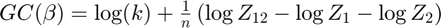
gc{n}(j) = log(K) + sum(log_joint_partition_sum - log_partition_sum1 ...
- log_partition_sum2) ./ size(partition_sum1,1);
% pack
inv_temp(j) = beta;
gibbs_dist_packed1{n}(:,:,j) = gibbs_dist1;
gibbs_dist_packed2{n}(:,:,j) = gibbs_dist2;
end
Number of equivariant transformations
Richness of the hypothesis space: 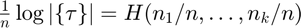
d = sum(round(gibbs_dist1),1); d = d./sum(d); d(d==0) = 1;
nTransformations = -d * log(d)';
% correct generalization capacity
gc{n} = gc{n} - log(K) + nTransformations;
gc{n} = gc{n} * log2(exp(1)); % transforming units from nats to bits
end
Results
display_result(gc,inv_temp,gibbs_dist_packed1,gibbs_dist_packed2,diffusion,...
seed_coords,data1,trajectory_all,time,connectivity_matrix,rem_idx)
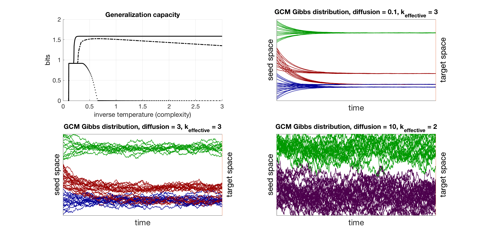 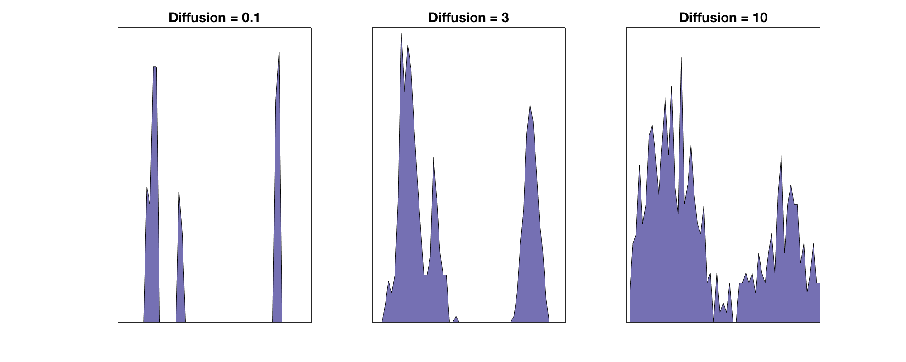 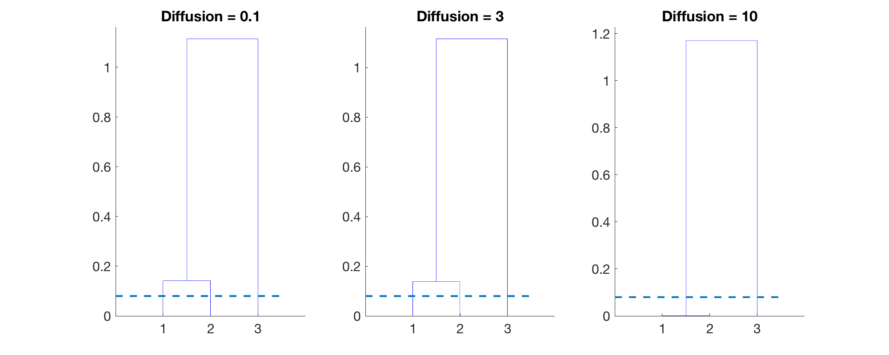 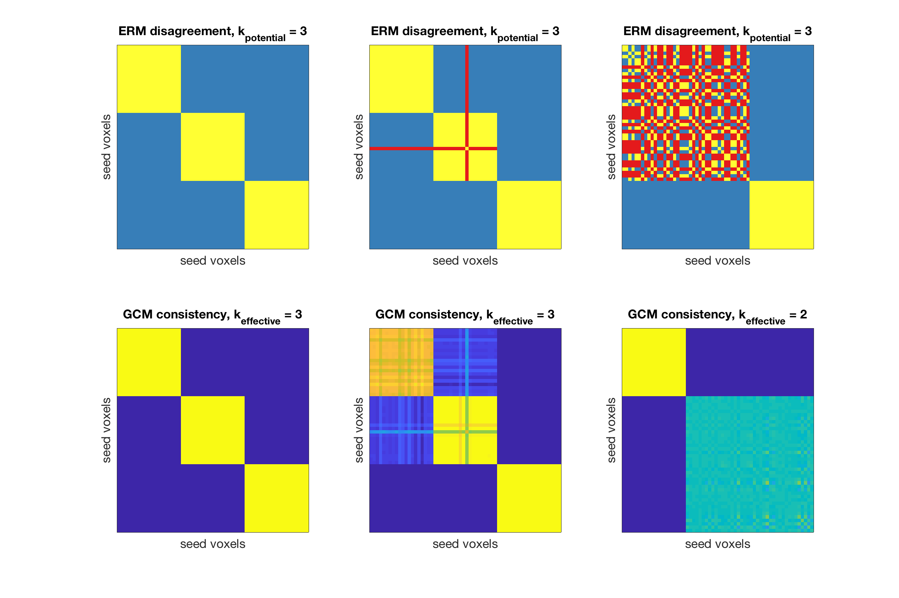 disp(['runtime: ' num2str(toc/60) ' minutes']); % runtime
runtime: 0.16734 minutes
Discussion
The generalization capacity ranks the experiments in the order corresponding to the stochasticity (i.e. magnitude of SDE diffusion coefficient) in the Ornstein-Uhlenbeck process which is expected since a stochasticity in the OU process results in more ``noisy'' connectivity scores. The ranking is further supported by the disagreement among the ERM's with red indicating disagreement of clusterings. The GCM's of the experiments characterized by the low and medium stochasticity resolve three effective clusters of seed objects based upon their connectivity scores to target objects. The experiment with stochasticity, however, sufficiently corrupts the connectivity scores such that clusters 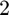 and 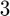 become indistinguishable as indicated by the GCM.